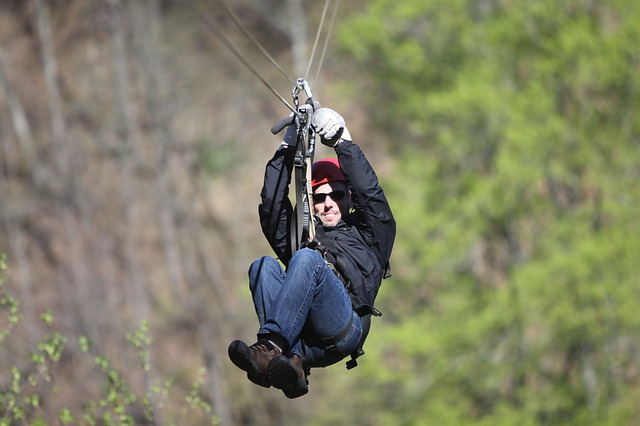

Entertainment

Most people visit Taniti to enjoy the beaches, explore the rainforest, and to visit the volcano.
However, there are other things to do, including visiting a local history museum, going on
chartered fishing tours, snorkeling, zip-lining in the rainforest, visiting several pubs, including
a microbrewery, dancing at a new dance club, seeing a movie, taking helicopter rides, playing at
an arcade, visiting art galleries, and bowling. Also a nine-hole golf course should beoperational
by next year. Many of these activities are located in Merriton Landing, which is a rapidly
developing area on the north siade of Yellow Leaf Bay.
Sight Seeing
Most tourists spend most of their time in Taniti City, which boasts native architecture and nearby
white, sandy beaches that encircle Yellow Leaf Bay. Other popular activities include boat or bus
tours of the island, hikes in the rainforest, or visits to Taniti's active volcano.
Restaurants
Taniti currently has 10 restaurants: five serve mostly local fish and rice, three serve
American-Style meals, and two serve Pan-Asian cuisine.